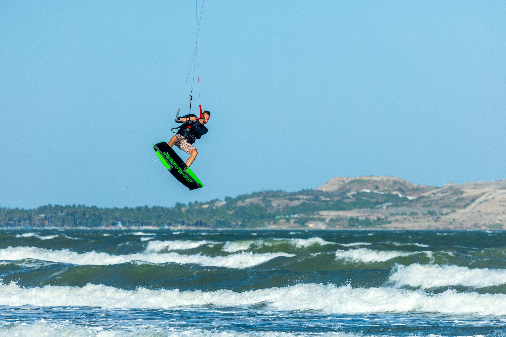

Your First Kite Jump: A Step-by-Step Technique Guide

The first time you leave the water on a kitesurf board is a moment you never forget. It's also the moment where most intermediate riders stall for months, making the same mistakes repeatedly without understanding why. This guide breaks down the jump into its exact mechanical components — so you stop crashing and start flying.
Before You Try a Jump: The Prerequisites
Attempting to jump before you're ready is the fastest way to hurt yourself or someone else. Be honest: can you do all of the following consistently?
- Ride upwind comfortably in both directions
- Ride with one hand on the bar for 10+ seconds
- Edge hard and slow down on command
- Steer the kite to 45° (10 o'clock / 2 o'clock positions) while riding
If you said yes to all four, you are ready to learn to jump. If you hesitated on any of them, your time is better spent drilling those skills first — jumping will happen naturally once your kite control is automatic.
The Physics of a Kite Jump
Understanding why a jump works makes learning it much faster. A jump requires two forces working simultaneously:
- Upward pull from the kite: By steering the kite from a low, horizontal position to directly overhead (12 o'clock), the kite's lift vector goes from horizontal to vertical. It pulls you UP.
- Upward pop from the board: By edging hard against the kite's pull and then suddenly releasing that edge (the "pop"), you use the tension in the lines like a spring. The board leaves the water as if you stomped on a trampoline.
A jump without the pop is just a lift — the kite drags you up slowly and you hang awkwardly. A pop without the kite sends you 20cm in the air before falling. The magic is in combining both perfectly.
The 5 Steps — Broken Down
Step 1: Build Upwind Edge
Start riding comfortably on a reach (kite at 10 or 2 o'clock). Begin edging harder — dig the upwind rail of the board into the water, lean back against the pull, and build speed. Think of loading a spring. The more tension you build between the kite and your body, the bigger the pop. Many beginners skip this step and wonder why their jumps are tiny.
Step 2: Send the Kite Back
With your kite at 10 or 2 o'clock, steer it toward 12 (directly overhead). This is the "send." You want a smooth, deliberate motion — not a snap. As the kite travels upward, you'll feel the power build rapidly. This is the lift component activating.
Step 3: The Pop
Just as the kite reaches 11 or 1 o'clock (on its way to 12), release your edge sharply. This is the "pop" — the spring releasing. In the same motion, bend your knees and push down through your legs, then immediately bring your knees up toward your chest. This action lifts the board with you and keeps it under your feet in the air.
The most common mistake: Students send the kite but don't pop. They let the kite drag them up passively, which means they go up slowly and come down on their backs. The pop and the kite send must happen simultaneously.
Step 4: Body Position in the Air
Once airborne, sheet in slightly (pull the bar toward you) to depower the kite slightly — this gives you control and prevents the kite from pulling you forward and making you crash nose-first. Keep your knees bent, board under you, and look at the horizon — not at the water. Where your eyes go, your body follows.
Step 5: Landing
As you descend, steer the kite slightly forward (toward 11 or 1 o'clock, away from 12). This converts the kite's pull from vertical back to horizontal, decelerating your descent. Land with bent knees — absorb the impact like a snow landing — and immediately resume your edge to avoid being dragged forward on the water's surface.
The Two Most Common Crash Types (And Fixes)
- Crash forward (faceplant): Kite was too far back at landing. Fix: bring the kite forward earlier on the way down.
- Crash backward (back slam): You didn't pop — just let the kite lift you. Fix: focus on the edge-and-pop phase, not just the kite send.
Jump Checklist
- ✅ Hard upwind edge built (spring loaded)
- ✅ Kite sent smoothly from 10/2 → 12
- ✅ Pop (edge release + knee extension + knee tuck) simultaneous with kite reaching 11/1
- ✅ Sheet in slightly in the air, knees bent, eyes on horizon
- ✅ Kite steered forward during descent, land with bent knees
Your first successful jump will be small — maybe 1 meter of air. That's perfect. Height comes naturally with repetition and confidence. The goal for your first 10 jumps is technique, not height. Get the sequence right and the sky literally becomes the limit.